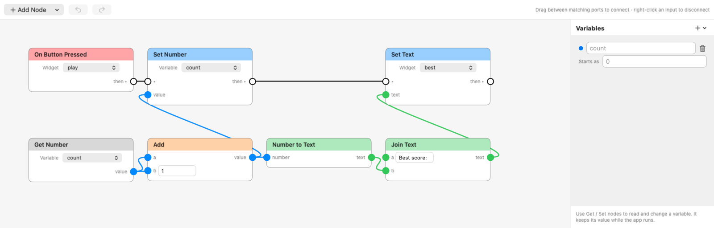

Node editor
Build logic by joining blocks instead of writing code.
Open it
A UI app project includes logic/main.wiinodes with a working click counter. Double-click it. Add another with File > New > Wii Homebrew > Node Graph.

How it works
- Add Node adds a block. Drag between two ports of the same colour to join them.
- White wires are the order things happen in. Start at a red event block.
- Coloured wires carry values: blue numbers, green text, orange yes/no.
- An input with nothing joined shows a box where you type a value.
- Drag a title to move a node, drag the background to pan, Delete removes a node, right-click an input to disconnect it.
Blocks
- Events: On Start, On Every Frame, On Draw, On Button Pressed, On Wii Remote Button.
- Flow: Branch (if), Repeat.
- Actions: set text, visibility or colour, set a variable, exit.
- Game: draw a rectangle, text or sprite, play a sound. Input: button held or pressed, stick, pointer.
- Values and maths: numbers, text, variables, add, subtract, compare, random, join text, and more.
Variables
The Variables panel holds numbers, text or yes/no values that last while the app runs. Read them with Get blocks and change them with Set blocks.
If a build stops
A block that names a widget, sprite, sound or variable that doesn't exist stops the build, and the Console says which. Use Repeat for loops.